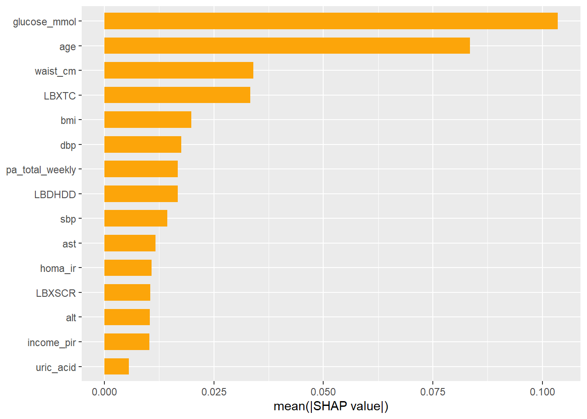
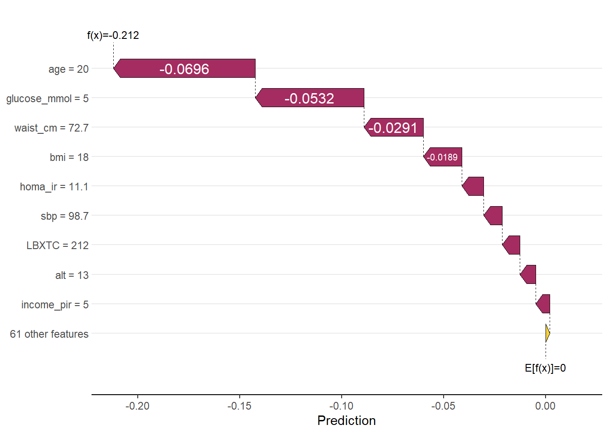

library(tidymodels)
library(dplyr)
library(readr)
# XAI packages
library(lime)
library(fastshap)
library(shapviz)
set.seed(2025)
PKGNAME <- "BigDataAndAI" # <--- CHANGE THIS to your package name
# Helper function to find if we are inside the package source tree
find_pkg_root <- function(path = getwd()) {
# Traverse up directories looking for a DESCRIPTION file
while (path != dirname(path)) {
if (file.exists(file.path(path, "DESCRIPTION"))) {
# Verify it is actually THIS package
desc <- tryCatch(read.dcf(file.path(path, "DESCRIPTION")), error = function(e) NULL)
if (!is.null(desc) && desc[1, "Package"] == PKGNAME) {
return(path)
}
}
path <- dirname(path)
}
return(NULL)
}
pkg_root <- find_pkg_root()
if (!is.null(pkg_root) && requireNamespace("devtools", quietly = TRUE)) {
# SCENARIO 1: We are developing (inside the source folder)
message(sprintf("Development mode: Loading %s from source via load_all()", PKGNAME))
devtools::load_all(pkg_root, export_all = FALSE) # export_all=FALSE behaves more like real library
} else if (requireNamespace(PKGNAME, quietly = TRUE)) {
# SCENARIO 2: Student mode (package is installed)
message(sprintf("Student mode: Loading installed %s library", PKGNAME))
library(PKGNAME, character.only = TRUE)
} else {
# SCENARIO 3: Disaster (Not installed, not in source)
stop(sprintf(
"The package '%s' is not installed. Please run: remotes::install_github('stenw/%s')",
PKGNAME, PKGNAME
))
}
nhanes <- load_nhanes()
analysis_df <- nhanes %>%
select(
diabetes,
age, sex, race_eth, education, income_pir,
bmi,
waist_cm,
sleep_hours,
sbp = sbp_mean,
dbp = dbp_mean,
glucose_mmol,
LBXTC, LBDHDD, LBXTR,
LBXSCR, alt, ast,
smoking_status,
vitD, uric_acid,
alcohol,
pa_total_weekly, sedentary_min,
homa_ir,
SIAPROXY, SIAINTRP, DMDMARTL,
PHAFSTHR
) %>%
filter(!is.na(diabetes)) %>%
mutate(
# Convert to factor
diabetes = factor(diabetes, levels = c("1", "0")) # Force "1" to be first
)Practical 4: Explainable AI (XAI) in Epidemiology
LIME and SHAP on NHANES diabetes prediction
Learning objectives
After this practical, you should be able to:
- Explain the difference between global and local explanations
- Use LIME to explain individual predictions
- Use SHAP (approximate SHAP via Monte Carlo) to explain predictions locally and globally
- Recognize common pitfalls: correlation, instability, and causal misinterpretation
1. Setup
2. Fit a boosted model (quick, guided)
To focus on XAI, we fit a reasonable boosted tree model without lengthy tuning. (You can swap these settings for your tuned values from Practical 2.)
Recipe
boost_recipe <- recipe(diabetes ~ ., data = analysis_df) %>%
step_indicate_na(all_predictors()) %>%
step_impute_median(all_numeric_predictors()) %>%
step_impute_mode(all_nominal_predictors()) %>%
step_zv(all_predictors()) |>
step_dummy(all_nominal_predictors(), one_hot = TRUE) Workflow + model
boost_spec <- boost_tree(
trees = 500,
learn_rate = 0.05,
tree_depth = 3,
min_n = 20,
mtry = 10
) %>%
set_engine("xgboost") %>%
set_mode("classification")
boost_wf <- workflows::workflow() %>%
workflows::add_recipe(boost_recipe) %>%
workflows::add_model(boost_spec)Train/test split (for explaining predictions on a held-out set):
set.seed(2025)
split <- rsample::initial_split(analysis_df, prop = 0.75)
train_df <- rsample::training(split)
test_df <- rsample::testing(split)
boost_fit <- workflows::fit(boost_wf, train_df)Check basic predictive performance (optional):
test_pred <- predict(boost_fit, test_df, type = "prob") %>%
bind_cols(test_df)
yardstick::roc_auc(test_pred, truth = diabetes, .pred_1)# A tibble: 1 × 3
.metric .estimator .estimate
<chr> <chr> <dbl>
1 roc_auc binary 0.913yardstick::brier_class(test_pred, truth = diabetes, .pred_1)# A tibble: 1 × 3
.metric .estimator .estimate
<chr> <chr> <dbl>
1 brier_class binary 0.0792yardstick::mn_log_loss(test_pred, truth = diabetes, .pred_1)# A tibble: 1 × 3
.metric .estimator .estimate
<chr> <chr> <dbl>
1 mn_log_loss binary 0.2584. Prepare data for explanations (important!)
Many XAI tools need access to the post-processed feature space (after dummy encoding, imputation). We therefore:
prep()the recipe on the training setbake()both train and test into the same feature columns
rec_prep <- recipes::prep(boost_recipe, training = train_df, retain = TRUE)
train_baked <- recipes::bake(rec_prep, new_data = train_df)
test_baked <- recipes::bake(rec_prep, new_data = test_df)
# Keep separate X (features) and y (truth)
x_train <- train_baked %>% select(-diabetes)
y_train <- train_baked$diabetes
x_test <- test_baked %>% select(-diabetes)
y_test <- test_baked$diabetes
dim(x_train)[1] 26077 70We also extract the fitted model object:
boost_model <- workflows::extract_fit_parsnip(boost_fit)$fit
boost_model##### xgb.Booster
raw: 533.5 Kb
call:
xgboost::xgb.train(params = list(eta = 0.05, max_depth = 3, gamma = 0,
colsample_bytree = 1, colsample_bynode = 0.142857142857143,
min_child_weight = 20, subsample = 1), data = x$data, nrounds = 500,
watchlist = x$watchlist, verbose = 0, nthread = 1, objective = "binary:logistic")
params (as set within xgb.train):
eta = "0.05", max_depth = "3", gamma = "0", colsample_bytree = "1", colsample_bynode = "0.142857142857143", min_child_weight = "20", subsample = "1", nthread = "1", objective = "binary:logistic", validate_parameters = "TRUE"
xgb.attributes:
niter
callbacks:
cb.evaluation.log()
# of features: 70
niter: 500
nfeatures : 70
evaluation_log:
iter training_logloss
<num> <num>
1 0.6686653
2 0.6416218
--- ---
499 0.2393773
500 0.23932755. Define a consistent prediction wrapper
Both LIME and SHAP need a function that returns predicted probabilities for class “1”.
pred_prob_1 <- function(model, newdata) {
# newdata is a data.frame with same columns as x_train
# xgboost needs a numeric matrix
m <- as.matrix(newdata)
as.numeric(predict(model, m)) # some combinations of package versions/inputs can return a nx1 matrix!
}6. LIME: local explanations for individual predictions
6.1 What is LIME?
LIME explains a single prediction by: - sampling small perturbations around the case - fitting an interpretable surrogate model locally (often sparse linear) - reporting which features most drove the prediction in that local neighborhood
Warning: LIME explains the model, not the patient, and not causality.
6.2 Create a LIME explainer
We give LIME the training features (post-processing) and the prediction function.
explainer_lime <- lime::lime(
x = x_train,
model = boost_model,
bin_continuous = FALSE,
quantile_bins=FALSE,
labels = "1",
)6.3 Choose a few test cases to explain
We pick three test cases: - one high predicted risk - one low predicted risk - one near the decision boundary
test_scores <- tibble(
row_id = seq_len(nrow(x_test)),
p1 = pred_prob_1(boost_model, x_test)
)
test_scores %>% summarise(min = min(p1), median = median(p1), max = max(p1))# A tibble: 1 × 3
min median max
<dbl> <dbl> <dbl>
1 0.00110 0.115 0.999high_id <- test_scores %>% arrange(desc(p1)) %>% slice(1) %>% pull(row_id)
low_id <- test_scores %>% arrange(p1) %>% slice(1) %>% pull(row_id)
mid_id <- test_scores %>% mutate(dist = abs(p1 - 0.5)) %>% arrange(dist) %>% slice(1) %>% pull(row_id)
ids <- c(low_id, mid_id, high_id)
ids[1] 4214 5958 75386.4 Explain those cases
cases <- x_test[ids, , drop = FALSE]
lime_explanations <- lime::explain(
x = cases,
explainer = explainer_lime,
labels = "1",
n_features = 3,
feature_selection = "lasso_path"
)
lime_explanations |> select(-c(model_type)) |>
print(n = Inf, width = Inf)# A tibble: 9 × 12
case label label_prob model_r2 model_intercept model_prediction feature
<chr> <chr> <dbl> <dbl> <dbl> <dbl> <chr>
1 1 1 0.00110 0.503 -0.873 -0.0952 glucose_mmol
2 1 1 0.00110 0.503 -0.873 -0.0952 age
3 1 1 0.00110 0.503 -0.873 -0.0952 waist_cm
4 2 1 0.501 0.522 -0.915 0.324 glucose_mmol
5 2 1 0.501 0.522 -0.915 0.324 age
6 2 1 0.501 0.522 -0.915 0.324 waist_cm
7 3 1 0.999 0.524 -0.908 0.733 glucose_mmol
8 3 1 0.999 0.524 -0.908 0.733 age
9 3 1 0.999 0.524 -0.908 0.733 waist_cm
feature_value feature_weight feature_desc data prediction
<dbl> <dbl> <chr> <list> <list>
1 5.00 0.0998 glucose_mmol <named list [70]> <named list [2]>
2 20 0.00421 age <named list [70]> <named list [2]>
3 72.7 0.00269 waist_cm <named list [70]> <named list [2]>
4 5.61 0.112 glucose_mmol <named list [70]> <named list [2]>
5 77 0.00401 age <named list [70]> <named list [2]>
6 121. 0.00253 waist_cm <named list [70]> <named list [2]>
7 8.77 0.102 glucose_mmol <named list [70]> <named list [2]>
8 71 0.00417 age <named list [70]> <named list [2]>
9 156. 0.00291 waist_cm <named list [70]> <named list [2]>Plot:
plot_features(lime_explanations)
Interpretation questions (write short answers): 1. Do the explanations for the low-risk and high-risk case emphasize different predictors? 2. Which predictors appear repeatedly? 3. How might correlated variables (e.g., BMI and waist) affect these explanations?
7. SHAP: local + global explanations
7.1 What are SHAP values?
SHAP values attempt to allocate “credit” for a prediction across features based on a game-theoretic idea: - How much does each feature contribute to moving the prediction away (up or down) from the average prediction? - So the predictions are then equal to the sum of the average prediction + SHAP values across features. - This is done by considering all possible ‘coalitions’ of covariates: For each covariate, its SHAP value is the average marginal contribution of that feature averaged over all possible orders in which the covariates could be added to the model.
Because the number of possible orderings grows very fast with the number of features, exact computation is often infeasible. Therefore, we calculate approximate SHAP values using Monte Carlo simulation, where we calculate the contribution for a number of random orderings and average the results. For this we use the fastshap package.
Warning: SHAP values can be unstable and are sensitive to correlation and background distribution.
7.2 Compute SHAP values for a subset (runtime-friendly)
Computing SHAP for every observation can be slow. We compute SHAP for: - a random sample of test observations (global view) - plus our 3 cases (local view)
set.seed(2025)
idx_global <- sample(seq_len(nrow(x_test)), size = min(300, nrow(x_test)))
x_global <- x_test[idx_global, , drop = FALSE]
# include the 3 selected cases too
x_local <- casesCompute SHAP values:
set.seed(2025)
shap_global <- fastshap::explain(
object = boost_model,
X = as.data.frame(x_train), # background distribution (training)
newdata = as.data.frame(x_global), # points to explain
pred_wrapper = pred_prob_1,
nsim = 50 # increase to 100+ for more stable values (slower)
)7.3 Global SHAP summary plot
First we create a summary plot. We take the absolute value of all the SHAP values and average them acrosss observations per feature:
# `shapviz` expects SHAP values and the explained feature matrix.
sv_global <- shapviz::shapviz(shap_global, X = x_global)
shapviz::sv_importance(sv_global, kind='bar')
This tells us on average how strongly the variable influences the model’s predictions. This is displayed as a bar plot. The larger the bar the larger the impact of the variable. However, the direction of the effect is ignored.
The SHAP values are often displayed in a beeswarm-style plot. For each feature (on the axis) we plot the SHAP values for all observations (on the x-axis). The color of each point indicates the value of the feature. This plot provides more information than the bar plot as it also shows the direction of the effect (positive or negative SHAP value) and how this relates to the feature value.
shapviz::sv_importance(sv_global, kind="beeswarm")
Questions: - Which variables are most influential overall? - Do they align with clinical intuition? - What surprises you?
8. SHAP for individual cases (local explanations)
Compute SHAP for the 3 selected cases:
shap_local <- fastshap::explain(
object = boost_model,
X = as.data.frame(x_train),
newdata = as.data.frame(x_local),
pred_wrapper = pred_prob_1,
nsim = 100
)
sv_local <- shapviz(shap_local, X = x_local)We now display these in local waterfall plots (one at a time):
sv_waterfall(sv_local, row_id = 1)
sv_waterfall(sv_local, row_id = 2)
sv_waterfall(sv_local, row_id = 3)
We use the function sv_waterfall. The bottom of the plot starts at the average model prediction (base value). The top of the plot shows the actual model prediction for the specified observation. Each variable is represented by a bar that either moves the prediction up (increases the predicted probability) or down (decreases the predicted probability). The length of each bar indicates the magnitude of the effect.
Questions: 1. For each case: which 2–3 features push risk up the most? Which push risk down? 2. Compare the SHAP explanation for the “boundary” case vs the “high-risk” case. 3. Do SHAP and LIME tell a consistent story? If not, why might they differ?
9. Critical pitfalls (epidemiology lens)
Answer briefly:
- Correlation problem: If BMI and waist are correlated, how can credit assignment become misleading?
- Causality trap: Why is it incorrect to interpret a positive SHAP value as a causal risk factor?
- Stability: If you rerun
fastshap::explain()with a different seed or differentnsim, what changes? (Optional experiment: rerun withnsim = 20and compare.)
10. Summary
- LIME explains locally using a simple surrogate model; it can vary a lot across runs and neighborhoods.
- SHAP provides local and global views; it is powerful but sensitive to correlations and modeling choices.